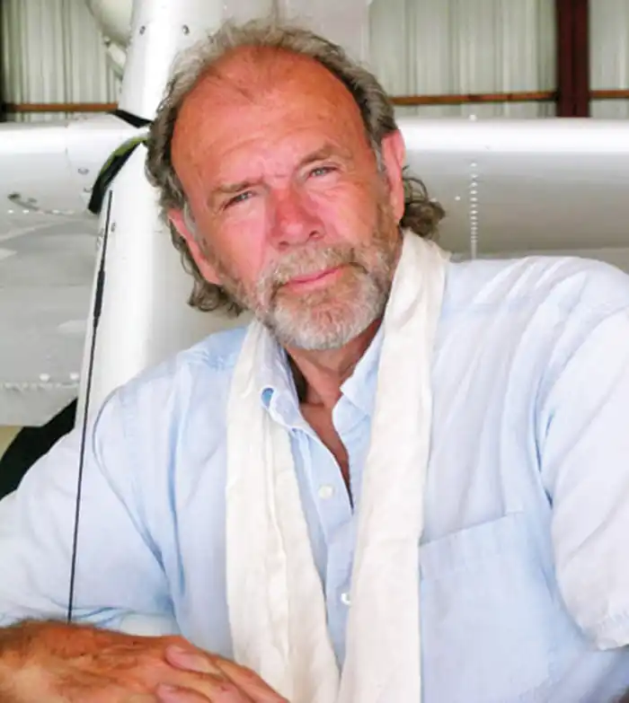
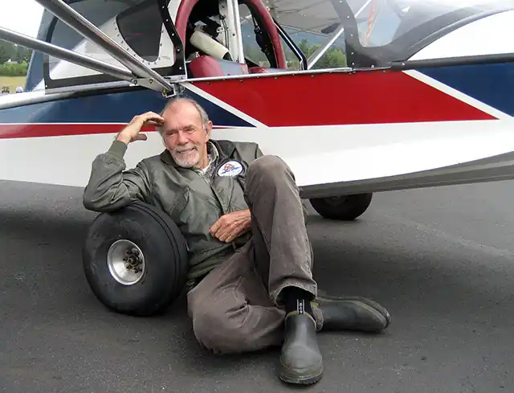

З ім'ям Річарда Баха асоціюється, в першу чергу, його культова твори "Чайка на ім'я Джонатан Лівінгстон", і його шанувальники знають, що він є льотчиком вищого класу. Майже всі твори Баха автобіографічні; це не розважальна література, а, радше, філософські трактати, переконливо доводять, що фізичні можливості і навіть сама смерть – не більше, ніж наші уявлення про них.
Річард Бах (Richard David Bach) вже немолодий – він з'явився на світ у 1936 році, в американському Оук-Парку (штат Іллінойс). В сім'ї Бахов збереглася легенда, що вони ведуть свій рід від знаменитого композитора. Річард був середнім з трьох синів Роланда і Рут Бах; згодом у його книгах описані спогади про старшого брата на ім'я Рой і ранньої смерті молодшого, Боббі. Річард з дитинства був справжнім фанатом літаків, саморобними моделями яких заповнив весь будинок. У 17 років він вперше піднявся в небо на любительському біплані.
У 1955 році Річард Бах поступив в Коледж Лонг-Біч (в даний час — Каліфорнійський університет Лонг-Біч), який закінчив у 1959 році, вже проходячи службу в армії. У 1956 році Бах став військовим льотчиком і служив у Морському резерві США, Національної гвардії Нью-Джерсі, 141 повітряному ескадроні, літав на реактивному бомбардувальнику F-84F. У 1957 році він одружився на Бетті Джин Франкс; у цьому шлюбі народилося шестеро дітей. Першим, що Річарду Баху довелося викладати на папері, були технічні інструкції. У 1962 році, після закінчення військової служби в чині капітана, він став займатися гастрольними польотами, під час яких демонстрував фігури вищого пілотажу і одночасно співпрацювати зі спеціальними журналами "Douglas Aircraft" і "Flying". У 1963 році Річард Бах опублікував свою першу книгу "Чужий на землі". Ця частково автобіографічна повість стала першим втіленням основної думки льотчика про те, що людина фізично пов'язаний з землею, а станом польоту він зобов'язаний не стільки техніки, скільки силі духу. Втім, цей твір, як і наступні книжки Баха, "Біплан" (1966) і "Ніщо не випадково" (1969), особливого успіху не мали. Тріумф настав у 1970 році. Книгу "Чайка на ім'я Джонатан Лівінгстон", яку частинами друкував журнал "Flying", насилу вдалося прилаштувати в видавництво "Макміллан'. Однак це твір, оснащене унікальними фотографіями чайок, несподівано стало бестселером. Невелика притча про те, що літати можна не для добування їжі, а з любові до польотів, долаючи для цього заборони, посіла друге місце в американській літературі, пропустивши вперед лише "Віднесених вітром", і була переведена на багато мов, включаючи російську (1974, "Іноземна література"). У цьому ж році Бах розлучився зі своєю дружиною, заявивши, що не вірить у шлюб (при тому, що Бетті витратила чимало сил на редагування його книг). Молодший син письменника, Джонатан, згодом описав свої стосунки з батьком, якого фактично дізнався вже в студентському віці, в книзі "Над хмарами". У 1971 році Річард Бах з'явився на кіноекрані, виконавши повітряні трюки для фільму "Червоний барон", а також брав участь у зйомках шоу ‘Вечірнє шоу Джонні Карсона'. У 1973 році почалися зйомки фільму за книгою "Чайка на ім'я Джонатан Лівінгстон", проте знімальний процес супроводжувався скандалами, пов'язаними із змінами сюжету без узгодження з Бахом. Посередником у владнанні конфлікту виступала актриса Леслі Перріш. Між актрисою і письменником виникли відносини, згодом викладені в романі ‘Міст у вічність' (1984). Леслі навіть стала співавтором книги "Єдина" (1988). У 1981 році Леслі і Річард одружилися, але цей шлюб розпався в 1997 році. Черговою книгою Річарда Баха, яка принесла гучний успіх її автору, стала "Ілюзія, або пригоди месії мимоволі" (1977), в якій по-новому розкривається думка про особисту відповідальність за свої можливості. Продовження цієї книги, "Кишеньковий довідник месії", вийшов в 2004 році, а в 2014 Бах опублікував свою останню на сьогоднішній день книжку — ‘Ілюзія 2, або пригоди студента мимоволі'. Успіхом у читачів користувалися також серія казок для дітей "Хроніки тхорів' (2002-2005 рр.), езотеричний роман "Гіпноз для Марії' (2009) та інші твори Баха. У 1999 році письменник одружився на двадцатидевятилетней Сабріні-Нельсон Алексопулос. Незважаючи на велику різницю у віці, подружжя заявляють, що щасливі у шлюбі. У 2012 році Річард Бах здійснював політ на біплані і зачепив дроти електропередач. Літак розбився, і його тільки на наступний день виявили туристи. Письменник провів чотири місяці в лікарні, а після одужання розповів, що книгу "Подорожі з Puff" він передав у видавництво рівно за день до події. Крім того, пережита аварія надихнула Баха на створення четвертої частини "Чайки на ім'я Джонатан Лівінгстон".